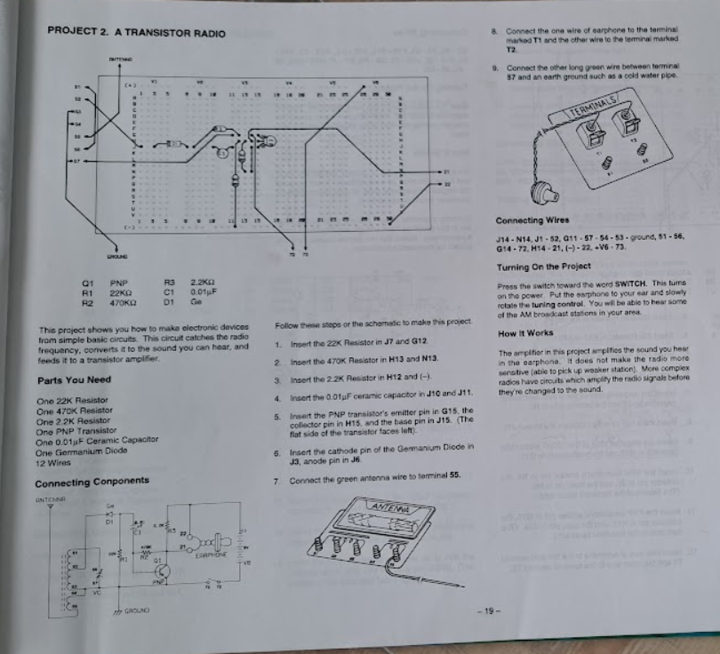
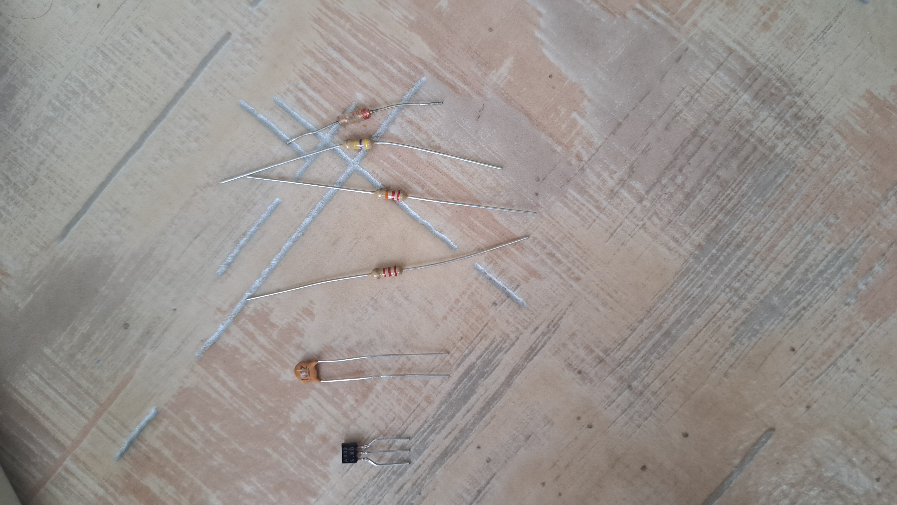

Transistor Radio
A következő Projekt egy AM rádió amit ez a könyv alapján készítettünk el.

Alkatrészek amiket felhasználtunk
- 3db Ellenállás
- 1db Kondenzátor
- 1db Transistor
- 1db Dioda

Az értékei az elkatrészeknek
- R1 = 22K ohm
- R2 = 470K ohm
- R3 = 2.2K ohm
- C1 = 0.01 uF
- D1 = Ge
- Q1 = PNP
Kapcsolási Rajz